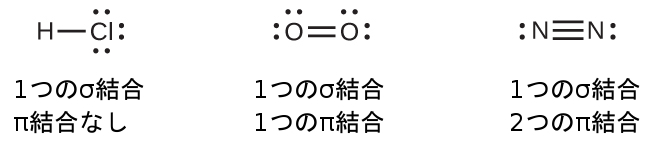
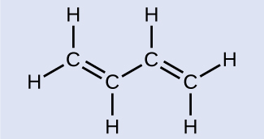
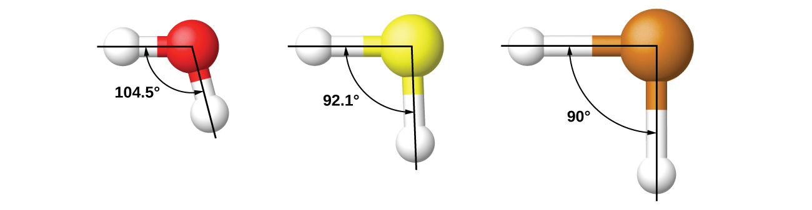
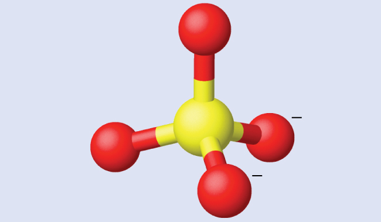
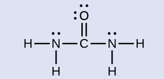
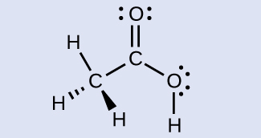
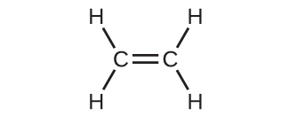
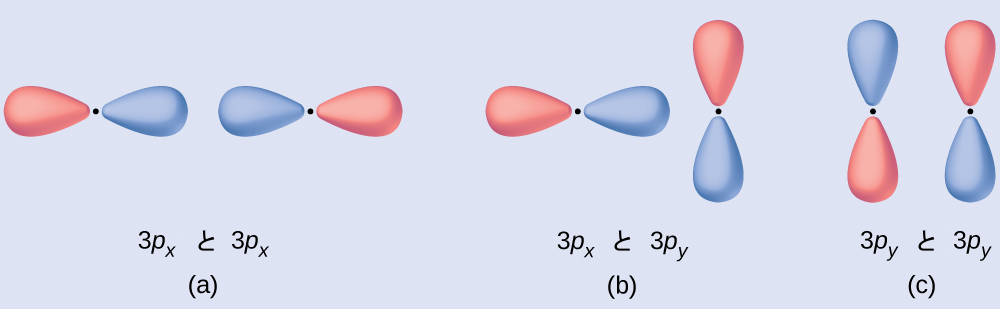
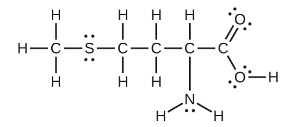
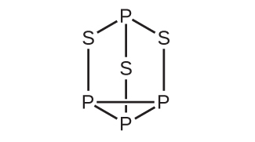

第8章 共有結合の高度な理論
図8.1 | 上の拡大図に示されているように、酸素分子はほとんどの場合、ランダムな方向を向いています。しかしながら、液体酸素を磁石の間に通すように流すと、分子は磁場に沿って並び、引力によって磁石の極の間の磁場が最も強い場所に浮遊したままになります。他の二原子分子(N₂など)は磁石の間を流れていきます。この章で説明される結合の詳細な説明によって、私たちはこの現象を理解することができます。(credit: modification of work by Jefferson Lab)
この章の概要
8.1 原子価結合理論
8.2 混成原子軌道
8.3 多重結合
8.4 分子軌道理論
はじめに
私たちは、これまでに結合の基本的な考え方を検討し、原子が電子を共有して安定なルイス構造を持つ分子を形成していること、また、原子価殻電子対反発(VSEPR)理論によってその分子の形状を予測できることを示しました。これらの考え方は、化学結合を理解するための重要な出発点となります。しかし、これらのモデルは、実際の物質の振る舞いを予測する能力に欠けていることがあります。s、p、dの原子軌道の幾何構造と、120°や109.5°のような角度を示す分子の形状とをどうやって調和させることができるのでしょうか?さらに、私たちは、電子と磁気的な振る舞いが電磁場を介して関係していることを知っています。N₂とO₂はどちらも、孤立電子対を含むよく似たルイス構造を有しています。
しかし、酸素は窒素とは非常に異なる磁気的な振る舞いを示します。私たちが液体窒素を磁場中に流しても、目に見える相互作用はありませんが、液体酸素(図8.1に示されています)は磁石に引き寄せられて磁場中に浮いています。これらの観測を理解するためには、私たちは、原子価結合理論、軌道の混成、分子軌道理論という追加の概念を理解する必要があります。
8.1 原子価結合理論
この節が終わるまでに、あなたは次のことができるようになります:
•原子軌道の重なりの観点から、共有結合の形成について記述する
•σ結合とπ結合を定義し、例を挙げる
私たちが知っているように、科学的な理論とは、観察された自然法則や大量の実験データによって強く支持された説明です。理論が受け入れられるためには、その理論は実験データを説明し、振る舞いを予測することができなければなりません。たとえば、VSEPR理論は、何千もの異なる分子について集められた実験データと一致するような三次元の分子形状を予測するため、広く受け入れられるようになりました。しかしながら、VSEPR理論は化学結合の説明を与えるものではありません。
原子の電子構造をうまく記述する理論はいくつかあります。私たちは、量子力学を用いて、電子が位置する可能性のある原子の周りの特定の領域を予測することができます:s軌道の場合は球形、p軌道の場合はダンベル形、などです。しかしながら、これらの予測は自由原子の周りの軌道のみを記述するものです。原子が結合して分子を形成する場合、分子内で電子が位置するであろう領域を記述するには、原子軌道は十分ではありません。電子の分布をより完全に理解するには、分子の電子構造を説明できるモデルが必要です。よく知られている理論の1つに、電子の対が2つの原子で共有され、同時に両方の原子の原子核に引き寄せられることで共有結合が形成されるというものがあります。以下の節では、私たちは、このような結合が原子価結合理論と混成によってどのように記述されるかについて議論していきます。
原子価結合理論では、共有結合のことを、結合した2つの原子の間で共有される一対の電子をもたらす、半分満たされた原子軌道(それぞれが1つの電子を含む)の重なりとして記述します。私たちは、1つ目の軌道の一部と2つ目の軌道の一部が同じ空間の領域を占めるときに、2つの異なる原子の軌道が重なっていると言います。原子価結合理論によれば、2つの条件が満たされると共有結合が成立します:(1)1つ目の原子の軌道が、2つ目の原子の軌道と重なっていること、(2)それぞれの軌道にある1つの電子が組み合わさって電子対を形成していること、です。この負に帯電した電子対と2つの原子の正に帯電した原子核との間の相互引力は、私たちが共有結合と定義する力を介して2つの原子を物理的に結びつける役割を果たしています。共有結合の強さは、関与する軌道の重なりの程度に依存します。広範囲に重なり合う軌道は、重なりが少ない軌道よりも強い結合を形成します。
系のエネルギーは軌道がどれだけ重なっているかに依存します。図8.2は、2つの水素原子のエネルギーの和(色のついた曲線)が、水素原子がお互いに近づくにつれてどのように変化するかを示しています。原子が遠く離れているときは重なりがなく、慣例によってエネルギーの和をゼロとしています。原子がお互いに向かって移動すると、軌道が重なり始めます。それぞれの電子は、もう一方の原子の原子核の引力を感じ始めます。さらに、電子はお互いに反発し始め、原子核も同様に反発し始めます。原子はまだ大きく離れていますが、反発力よりも引力の方がわずかに強く、系のエネルギーは減少します。(結合が形成され始めます。)原子が近づくにつれて重なりが大きくなるので、電子に対する原子核の引力は増加し続けます(電子間や原子核間の反発力も同様に増加し続けます)。原子間の距離がある特定の距離になると(この距離は原子によって異なりますが)、エネルギーは最も低い(最も安定な)値に到達します。この結合した2つの原子核間の最適な距離が、2つの原子間の結合距離です。この時点では、引力と反発力が組み合わさって、可能な限り低いエネルギー構成を作り出しているため、結合は安定しています。もし、原子核間の距離がさらに減少すると、原子核間の反発力と、電子が互いに近接して収容されることによる反発力とが、引力よりも強くなるでしょう。すると、図8.2の左端に示されるように、系のエネルギーが上昇する(系が不安定化する)ことになります。
図8.2 | (a)2つの水素原子の相互作用は距離の関数として変化します。(b)原子の相互作用によって系のエネルギーが変化します。最も低い(最も安定な)エネルギーは74pmの距離で生じます。これはH₂分子で観測された結合の長さです。
結合エネルギーは、エネルギーの最小値(結合距離で生じます)と分離した2つの原子のエネルギーとの差です。これは、結合が形成されたときに放出されるエネルギーの量です。逆に、結合を破壊するには同じ量のエネルギーが必要とされます。図8.2に示されているH₂分子の場合、結合距離74 pmでは、その系は、2つの分離した水素原子よりも7.24 × 10⁻¹⁹Jだけエネルギーが低いです。これは小さな数字のように思えるかもしれません。しかしながら、私たちは、以前の熱化学の説明から、結合エネルギーはしばしばモル単位で議論されることを知っています。たとえば、1つのH-H結合を破壊するためには7.24×10⁻¹⁹Jを必要としますが、1モルのH-H結合を破壊するためには4.36×10⁵Jが必要です。いくつかの結合の長さとエネルギーの比較が表8.1に示されています。私たちは、さまざまな分子の中にこれらの結合の多くを見つけることができ、この表は平均値を提供しています。たとえば、CH₄の最初のC-H結合を破壊するには439.3 kJ/molが必要ですが、H–CH₂C₆H₅(一般的な塗料用シンナー)の最初のC-H結合を破壊するには375.5 kJ/molが必要です。
表8.1
2つの軌道間の距離に加えて、軌道の向きも重なりに影響を与えます(球対称である2つのs軌道を除いて)。軌道が2つの原子核の間の直線上で重なるように配向している場合には、より大きな重なりが可能です。図8.3は、異なる原子からの2つのp軌道の場合を示しています。軌道が斜めになっているのではなく、端と端が向き合っているときに重なりが大きくなります。
図8.3 | (a)2つのp軌道の重なりは、軌道の端と端が向き合っているときに最大になります。(b)それ以外の配置では重なりが少ないです。点は原子核の位置を示しています。
図8.4に示されているように、2つのs軌道の重なり(H₂の場合)、1つのs軌道と1つのp軌道の重なり(HClの場合)、2つのp軌道が端と端が向き合っている重なり(Cl₂の場合)は、すべてシグマ結合(σ結合)を作り出します。σ結合は原子核間の軸に沿った領域に電子密度が集中している共有結合です。つまり、原子核の間の線が重なり合う領域の中心を通ることになります。ルイス構造における単結合は、原子価結合理論ではσ結合として記述されます。
図8.4 | シグマ(σ)結合は以下のような重なり合いから形成されます:(a)2つのs軌道、(b)1つのs軌道と1つのp軌道、(c)2つのp軌道。点は原子核の位置を示しています。
パイ結合(π結合)は共有結合の一種であり、図8.5に示されるように、2つのp軌道が横に重なり合ってできたものです。π結合では、軌道が重なり合う領域は原子核間の軸の両側にあります。この軸に沿ってノード、つまり電子が見つかる確率のない平面があります。
図8.5 | パイ(π)結合は2つのp軌道が横に重なり合って形成されます。点は原子核の位置を示しています。
単結合はすべてσ結合ですが、多重結合はσ結合とπ結合の両方から構成されています。下のルイス構造が示唆するように、O₂は二重結合を含み、N₂は三重結合を含みます。二重結合は1つのσ結合と1つのπ結合からなり、三重結合は1つのσ結合と2つのπ結合からなります。任意の2つの原子の間では、最初に形成された結合は常にσ結合になりますが、任意の1つの場所には1つのσ結合しか存在することができません。どの多重結合であっても、1つのσ結合があり、残りの1つまたは2つの結合はπ結合になります。これらの結合については、この章の後半で詳しく説明します。

表8.1に見られるように、平均の炭素-炭素の単結合は347 kJ/molですが、炭素-炭素の二重結合では、π結合は267 kJ/molだけ結合強度を増加させます。追加のπ結合を加えると、さらに225 kJ/molが増加します。他のσ結合とπ結合を比較すると、同様のパターンを見ることができます。このように、個々のπ結合のそれぞれは、同じ2つの原子間の対応するσ結合よりも一般的に弱いものです。σ結合では、π結合よりも軌道の重なりの度合いが大きくなります。
例題8.1 σ結合とπ結合を数える

ブタジエン(C₄H₆)は合成ゴムを作るために使われます。この分子に含まれるσ結合とπ結合の数を特定してください。
解法
単結合には、6個のC-Hのσ結合と、1個のC-Cのσ結合の、合計7個があります。2つの二重結合はそれぞれσ結合に加えて、π結合を持っています。これにより、全体では合計9個のσ結合と2個のπ結合となります。
学習内容の確認
それぞれの図が、σ結合を描いたものであるか、またはπ結合を描いたものであるかを特定してください:
(a)4p軌道と2p軌道が横に重なり合っている重なり
(b)4p軌道と4p軌道の端と端が向き合っている重なり
(c)4p軌道と2p軌道の端と端が向き合っている重なり
解答:(a)は核を結ぶ軸に沿ってノードを持つπ結合であり、(b)と(c)は軸に沿って重なるσ結合です。
8.2 混成原子軌道
この節が終わるまでに、あなたは次のことができるようになります:
•原子軌道の混成の概念を説明する
•さまざまな分子幾何構造に関連する混成軌道を決定する
二原子分子で化学結合がどのように形成されるかを説明する1つの方法は、原子軌道の重なりという観点で考えることです。しかしながら、3つ以上の原子を持つ分子がどのようにして安定な結合を形成しているのかを理解するためには、私たちはより詳細なモデルを必要とします。たとえば、2つの水素原子に1つの酸素原子が結合している水分子を考えてみましょう。酸素は電子配置が1s²2s²2p⁴で、2つの不対電子(2つの2p軌道のそれぞれに1つ)を持っています。原子価結合理論では、2つのO-H結合は、これら2つの2p軌道と水素原子の1s軌道の重なりから形成されると予測されるでしょう。もしそうであれば、図8.6に示されるように、結合角は90°になるでしょう。なぜなら、p軌道はお互いに垂直であるからです。実験的な証拠は、結合角が90°ではなく104.5°であることを示しています。原子価結合理論モデルの予測は現実世界の水分子の観測結果とは一致しません。異なるモデルが必要です。
図8.6 | 酸素原子の2つの2p軌道(赤色)と2つの水素原子の1s軌道(青色)が重なると仮定すると結合角は90°になるでしょう。これは実験的な証拠と一致しません。[1]
量子力学的計算は、水素原子の1s軌道と酸素原子の2p軌道の重なりによって予測された結合角と、観測されたH₂Oの結合角が異なる理由を示唆しています。波動関数ψとして知られている数学的表現は、孤立した原子の中の電子のそれぞれの軌道と波動の性質についての情報を含んでいます。原子が分子内で結合すると、波動関数が組み合わさって、異なる形状を持つ新しい数学的記述が生成されます。原子軌道の波動関数を組み合わせるこのプロセスは混成と呼ばれ、数学的には原子軌道の線形結合、つまりLCAO法(私たちは後でこのテクニックに再び出会うことになります)によって達成されます。その結果生じる新しい軌道は混成軌道と呼ばれます。孤立した酸素原子の原子価軌道は、2s軌道と3つの2p軌道です。水分子中の酸素原子の原子価軌道はそれとは異なり、四面体のほぼ四隅を向いた4つの等価な混成軌道で構成されています(図8.7)。その結果、O軌道とH軌道が重なると四面体の結合角(109.5°)になります。観測された104.5°という角度は、量子力学的な計算が有用な説明を与えることのできる実験的な証拠です:原子価結合理論が正確な予測を行うためには、混成の要素を含まなければなりません。
図8.7 | (a)水分子は4つの電子密度領域を持っているので、VSEPR理論は混成軌道の四面体の配置を予測します。(b)酸素の混成軌道のうち2つは孤立電子対を含み、残りの2つは水素原子の1s軌道と重なってH₂OのO-H結合を形成しています。この記述は実験的な構造とより一致しています。
混成を理解する上で、以下のような考え方が重要です:
混成軌道は孤立した原子には存在しません。それらは共有結合した原子にのみ形成されます。
混成軌道は孤立した原子の原子軌道のものとは非常に異なる形と向きをしています。
原子軌道が組み合わさることによって混成軌道の集合が生成されます。集合の中の混成軌道の数は、集合を作るために組み合わさった原子軌道の数に等しいです。
混成軌道の集合に含まれるすべての軌道は、形状もエネルギーも等しいです。
結合した原子に形成される混成軌道の種類は、VSEPR理論によって予測される電子対幾何構造に依存します。
混成軌道は重なり合ってσ結合を形成します。非混成軌道は重なり合ってπ結合を形成します。
以下の項では、私たちは一般的な混成軌道の種類について議論していきます。
sp混成
気体のBeCl₂分子の中のベリリウム原子は、3つの原子が直線形で並んだ配置において孤立電子対を持たない中心原子の例です。BeCl₂分子には、2つの共有結合性のBe-Cl結合に対応する価電子密度の2つの領域が存在します。これら2つの電子領域を収容するために、Be原子の4つの原子価軌道のうちの2つが混ざり合い、2つの混成軌道が得られます。この混成プロセスは、原子価s軌道と原子価p軌道のうちの1つとの混合を含み、直線形の幾何構造で配向された2つの等価なsp混成軌道を得ることができます(図8.8)。この図では、sp軌道の集合は元のp軌道の形状と似たもののように見えますが、重要な違いがあります。組み合わさった原子軌道の数は、常に形成された混成軌道の数に等しいです。p軌道は、最大2つまでの電子を保持できる1つの軌道です。sp集合とは、互いに180°の方向を向いている2つの等価な軌道のことです。元々s軌道にあった2つの電子は、今では2つのsp軌道に分配され、sp軌道は半分が満たされています。気体のBeCl₂では、これらの半分が満たされた混成軌道は塩素原子の軌道と重なり、2つの同一のσ結合を形成します。
図8.8 | 同じ原子のs軌道(青色)とp軌道(赤色)の混成により、2つのsp混成軌道(黄色)が生成されます。それぞれの混成軌道は主に一方向だけに配向しています。それぞれのsp軌道は、他のものよりもかなり大きい1つの葉を含んでいることに注意してください。2つのsp軌道の集合は180°を向いており、これは2つの領域の幾何構造と一致しています。
私たちは、孤立したBe原子の中のものと結合したBe原子の中のものでの電子の違いを、図8.9の軌道エネルギー準位の図で示しています。これらの図は、それぞれの軌道を横線(そのエネルギーを示します)で、それぞれの電子を矢印で表しています。エネルギーは図の上の方に向かって増加していきます。私たちは上向きの矢印を使って軌道内の1つの電子を示し、2つの矢印(上向きと下向き)を使って反対のスピンを持つ2つの電子を示します。
図8.9 | この軌道エネルギー準位の図は、直線形のBeCl₂分子の中のBeのsp混成軌道を示しています。2つのsp混成軌道のそれぞれが1つの電子を保持しており、したがって、半分が満たされており、Clの3p軌道との重なりを介して結合のために利用することができます。
原子軌道が混成すると、価電子が新しくできた軌道を占有します。Be原子は2つの価電子を持っていたので、sp軌道のそれぞれがこれらの電子のうちの1つを取得します。これらの電子のそれぞれは、Be-Cl結合の形成の間に混成軌道と塩素軌道が重なったときに、塩素原子の不対電子と対になります。
分子内でただ2つの価電子密度の領域に囲まれた中心原子は、sp混成を示します。他の例としては、直線形のHgCl₂分子の中の水銀原子、直線形のC-Zn-C配置を含むZn(CH₃)₂の中の亜鉛原子、HCCHとCO₂の中の炭素原子などが挙げられます。
学習へのリンク
ウィスコンシン大学オシュコシュ校のウェブサイト(http://openstaxcollege.org/l/16hybridorbital)をチェックして、混成軌道の三次元での可視化について学んでください。
sp²混成
3つの電子密度領域に囲まれた中心原子の原子価軌道は、3つのsp²混成軌道と1つの非混成p軌道の集合によって構成されます。この配置は、sp²混成、すなわち、1つのs軌道と2つのp軌道を混ぜ合わせて、平面三角形の幾何構造を向いた3つの同一の混成軌道が作り出された結果です(図8.10)。
図8.10 | 1つのs軌道(青色)と2つのp軌道(赤色)の混成により、互いに対して120°に配向した3つの等価なsp²混成軌道(黄色)が生成されます。残りの非混成のp軌道はここには示されていませんが、z軸に沿って配置されています。
量子力学によって、図8.10に描かれているような「丸型の」軌道の葉が得られますが、明確にするために、図8.11のように、これらの軌道は、より細く、小さな葉を除いて描かれることがあります。これによって、与えられた図の他の特徴が不明瞭になるのを避けます。私たちは、実際の図ではあまりにも混み合っていて簡単には見ることができない場合には、 このような「より細い」表現を使うことにします。
図8.11 | 平面三角形のsp²混成軌道を描くこの別の方法は、より混み合っている図の代わりに使用されることがあります。
ボラン分子BH₃の観察された構造は、この化合物におけるホウ素のsp²混成を示唆しています。この分子は平面三角形であり、ホウ素原子は水素原子との3つの結合に関与しています(図8.12)。図8.13の軌道エネルギー準位図に示されるように、孤立したホウ素原子の中のものとBH₃の結合された原子の中のものとで、軌道および電子分布の比較を図示することができます。私たちは、ホウ素原子の3つの価電子を3つのsp²混成軌道に再分配し、ホウ素のそれぞれの電子は、B-H結合が形成されるときに水素の電子と対になります。
図8.12 | BH₃は平面三角形構造を持つ電子不足分子です。
図8.13 | 孤立したB原子では、1つの2s原子価軌道と3つの2p原子価軌道があります。ホウ素が3つの電子密度の領域を持つ分子の中に存在する場合、3つの軌道が混成して、3つのsp²軌道と1つの非混成2p軌道の集合を作ります。3つの半分が満たされた混成軌道は、それぞれ水素原子からの軌道と重なり、BH₃の3つのσ結合を形成します。
3つの電子密度の領域に囲まれた中心原子は、sp²混成を示します。これにはClNO(図8.14)のように中心原子に孤立電子対を持つ分子や、ホルムアルデヒド(CH₂O)やエテン(H₂CCH₂)のように中心原子に2つの単結合と1つの二重結合を持つ分子が含まれます。
図8.14 | ここに示されたそれぞれの構造の中心原子は、3つの電子密度の領域を含み、sp²混成しています。私たちがVSEPR理論の議論から分かるように、1つの電子密度の領域は一方向を向くすべての電子を含んでいます。孤立電子対、不対電子、単結合、または多重結合はそれぞれ1つの電子密度の領域として数えられます。
sp³混成
結合対と孤立電子対の四面体形の配置によって囲まれた原子の原子価軌道は、4つのsp³混成軌道の集合によって構成されています。この混成は、1つのs軌道と3つのp軌道のすべてが混合して4つの同一のsp³混成軌道が生成された結果です(図8.15)。これらの混成軌道はそれぞれ四面体の異なる隅を向いています。
図8.15 | 1つのs軌道(青色)と3つのp軌道(赤色)の混成により、互いに対して109.5°に配向した4つの等価なsp³混成軌道(黄色)が生成されます。
メタン分子CH₄は、四面体の隅にある4つの水素原子に囲まれた炭素原子で構成されています。メタンの炭素原子はsp³混成を示します。図8.16に、孤立した炭素原子の中のものとCH₄の結合された原子の中のものとについて、軌道および電子分布が示されています。炭素原子の4つの価電子は混成軌道に等しく分布しており、炭素のそれぞれの電子は、C-H結合が形成されるときに水素の電子と対になります。
図8.16 | 孤立した炭素原子からの4つの原子価原子軌道は、CH₄のような4つの電子密度の領域を持つ分子内で炭素が結合するときには、すべて混成します。これにより、4つの等価なsp³混成軌道が形成されます。混成軌道のそれぞれが水素の軌道と重なることで、C-Hのσ結合が形成されます。
メタン分子では、4つの水素原子のそれぞれの1s軌道が、炭素原子の4つのsp³軌道のうちの1つと重なり、シグマ(σ)結合を形成します。これにより、炭素原子とそれぞれの水素原子の間に4つの強く等価な共有結合が形成され、メタン分子CH₄が生成されます。
エタンC₂H₆の構造は、エタンのそれぞれの炭素が四面体の隅に配置された隣接する4個の原子(3個の水素原子と1個の炭素原子)を持つという点で、メタンの構造に似ています(図8.17)。しかしながら、エタンでは、1つ目の炭素原子のsp³軌道と2つ目の炭素原子のsp³軌道とが、端と端が向き合うように重なり、2つの炭素原子の間にσ結合を形成しています。残りのsp³混成軌道のそれぞれは、水素原子のs軌道と重なり、炭素-水素σ結合を形成しています。エタンの結合軌道の構造と全体の概要が図8.17に示されています。2つのCH₃基の配向は、互いに相対的に固定されていません。実験的な証拠は、σ結合の周りで回転が起こりやすいことを示しています。
図8.17 | (a)エタン分子C₂H₆では、それぞれの炭素は4つのsp³軌道を持っています。(b)これら4つの軌道が重なり合って7つのσ結合が形成されます。
また、sp³混成軌道は、孤立電子対を保持することもできます。たとえば、アンモニアの中の窒素原子は、四面体の四隅を向いた3個の結合対と1個の孤立電子対に囲まれています。窒素原子は、1つの混成軌道が孤立電子対によって占有される形でsp³混成しています。
水の分子構造は、2つの孤立電子対と2つの結合対の電子の四面体形の配置と一致しています。したがって、酸素原子は、混成軌道のうちの2つが孤立電子対によって占有され、2つが結合対によって占有される形でsp³混成しています。孤立電子対は結合対よりも多くの空間を占めるので、孤立電子対を含む構造は結合角が理想からわずかに歪んでいます。完全な四面体は109.5°の角度を持っていますが、アンモニア(107.3°)と水(104.5°)で観測された角度はわずかに小さくなっています。sp³混成の他の例としては、CCl₄、PCl₃、NCl₃などがあります。
sp³d混成とsp³d²混成
三方両錐形の配列の5つの結合軌道を記述するためには、私たちは、5つの原子価殻の原子軌道(1つのs軌道、3つのp軌道、d軌道のうち1つ)を使用しなければならず、これにより5つのsp³d混成軌道が得られます。八面体形配置の6つの混成軌道では、6つの原子価殻の原子軌道(1つのs軌道、3つのp軌道、およびその原子価殻内のd軌道のうちの2つ)を使用しなければならず、これにより6つのsp³d²混成軌道が得られます。これらの混成は、その原子の原子価殻内にd軌道を持つ原子(つまり、第1周期または第2周期にないもの)に対してのみ可能です。
五塩化リン(PCl₅)の分子では、三方両錐形の隅に向いた5つのP-Cl結合(つまり、リン原子の周りの5つの価電子対)があります。私たちは、1つの3s軌道、3つの3p軌道、および3d軌道のうちの1つを用いて、P-Cl結合に関与する5つのsp³d混成軌道の集合を形成します(図8.19)。sp³d混成を示す他の原子には、SF₄の硫黄原子、ClF₃とClF₄⁺の塩素原子が含まれます。(フッ素原子の電子はわかりやすくするために省略しています。)
図8.18 | ここに描かれた3つの化合物は中心原子がsp³d混成を示し、三方両錐形を形成しています。SF₄とClF₄⁺は中心原子に1個の孤立電子対があります。ClF₃は2個の孤立電子対があり、T字形を示しています。
図8.19 | (a)PCl₅のリンの周りの5つの電子密度の領域は、5つの混成sp³d軌道を必要とします。(b)これらの軌道が組み合わさって三方両錐形構造を形成し、混成軌道のそれぞれの大きな葉は頂点を指しています。前と同様に、それぞれの軌道には反対方向を向いている小さな葉もあります(わかりやすくするために図示していません)。
六フッ化硫黄SF₆の硫黄原子はsp³d²混成を示します。六フッ化硫黄の分子には、6つのフッ素原子と1つの硫黄原子とをつなぐ6つの結合電子対があります。中心原子には孤立電子対はありません。6つのフッ素原子を結合するため、1つの3s軌道、3つの3p軌道および3d軌道のうちの2つが、6つの等価なsp³d²混成軌道を形成します。それぞれは、八面体形の異なる隅に向いています。sp³d²混成を示す他の原子には、PCl₆⁻のリン原子、ハロゲン間化合物IF₆⁺、IF₅、ICl₄⁻、IF₄⁻のヨウ素原子、XeF₄のキセノン原子が含まれます。
図8.20 | (a)六フッ化硫黄SF₆は、sp³d²混成を必要とする八面体形の構造を持っています。(b)6個のsp³d²軌道が硫黄の周りに八面体形の構造を形成しています。ここでも、それぞれの軌道の小さな葉はわかりやすくするために図示していません。
中心原子への混成軌道の割り当て
原子の混成は、それを取り囲む電子密度の領域の数に基づいて決定されます。混成軌道のさまざまな集合の特徴的な幾何学的配置が、図8.21に示されています。これらの配置は、VSEPR理論によって予測された電子対幾何構造と同じです。VSEPR理論は分子の形状を予測し、混成軌道理論はそれらの形状がどのようにして形成されるかを説明します。中心原子の混成を求めるために、私たちは以下のような指針を用いることができます:
分子のルイス構造を決定します。
VSEPR理論を用いて、原子の周りの電子密度の領域の数を決定します。VSEPR理論では、単結合、多重結合、ラジカル、孤立電子対はそれぞれ1つの領域として数えられます。
この幾何構造に対応する混成軌道の集合を、図8.21から割り当てます。
図8.21 | 混成軌道の集合の形状は電子対幾何構造と一致しています。たとえば、3つの電子密度の領域に囲まれた原子はsp²混成しており、3つのsp²軌道は平面三角形状に配置されています。
混成は、実験的に観察された分子の幾何構造を理論づけるために考案されたということを覚えておくことが重要です。このモデルは、価電子対が空間的に近接している小さな中心原子を含む分子についてはうまく機能します。しかしながら、より大きな中心原子を含む分子では、原子価殻の電子対が核から離れ、反発力が少なくなります。それらの化合物は、しばしばVSEPR理論と一致しない構造を示し、混成軌道は観測されたデータを説明するために必要とされることはありません。たとえば、私たちはH₂OのH-O-H結合角(104.5°)について議論しましたが、これは2p軌道(90°)よりも中心原子のsp³混成軌道(109.5°)の方が整合性が高いです。硫黄は酸素と同じ族にあり、H₂Sは同様のルイス構造を持っています。しかしながら、その結合角ははるかに小さく(92.1°)、このことは酸素よりも硫黄の方が混成が少ないことを示しています。この族をさらに下に進むと、テルルは硫黄よりもさらに大きく、H₂Teでは、観測された結合角(90°)は、5p軌道の重なりと一致しており、混成を使う必要はありません。私たちは、観察された構造を説明するために必要な場合に、混成を用います。

例題8.2 混成を割り当てる
硫酸アンモニウムは肥料として重要なものです。硫酸イオンSO₄²⁻に含まれる硫黄原子の混成は何ですか?
解法
硫酸のルイス構造は、4つの電子密度の領域があることを示しています。混成はsp³です。

学習内容の確認
SeF₄のセレン原子の混成は何ですか?
解答:セレン原子はsp³d混成をしています。
例題8.3 混成を割り当てる
尿素NH₂C(O)NH₂は、肥料中の窒素源として使用されることがあります。尿素の中の炭素原子の混成は何ですか?
解法
尿素のルイス構造は、

炭素原子は3つの電子密度の領域に囲まれており、平面三角形の配置になっています。平面三角形の電子対幾何構造での混成はsp²です(図8.21)。これが尿素の中の炭素原子の混成となります。
学習内容の確認
酢酸H₃CC(O)OHは、酢において匂いや酸味を与える分子です。酢酸に含まれる2つの炭素原子の混成は何ですか?

解答:H₃C、sp³、C(O)OH、sp²
8.3 多重結合
この節が終わるまでに、あなたは次のことができるようになります:
•原子軌道の重なりの観点から、多重共有結合について記述する
•共鳴の概念をπ結合や電子の非局在化に関連付ける
混成軌道モデルは、単一の共有結合を含む分子の幾何構造をよく説明しているように見えます。それは、二重結合や三重結合を含む分子も記述できるのでしょうか?私たちは、多重結合がσ結合とπ結合で構成されていることはすでに議論しました。次に、私たちはこれらの成分をどのように可視化し、それらがどのようにして混成軌道と関係しているかを考えてみましょう。エテンのルイス構造(C₂H₄)は、それぞれの炭素原子が、もう1つの炭素原子と2つの水素原子に囲まれていることを示しています。

3つの結合領域は、平面三角形の電子対幾何構造を形成しています。したがって、私たちは、それぞれの炭素原子からのσ結合は、2p軌道のうちの2つと2s軌道が混成したsp²混成軌道の集合を用いて形成されていると予測します(図8.22)。これらの軌道は、C-H単結合とC=C二重結合のσ結合を形成します(図8.23)。C=C二重結合のπ結合は、それぞれの炭素原子の混成に関与していない第3の(残りの)2p軌道の重なりから生じます。この混成されていないp軌道(図8.23の赤色と青色で示されている葉)は、sp²混成軌道の平面に対して垂直です。したがって、混成されていない2p軌道は原子核間の軸の上下で横に重なり合い(図8.23)、π結合を形成します。
図8.22 | エテンでは、それぞれの炭素原子はsp²混成しており、sp²軌道とp軌道は1つが占有されています。混成軌道が重なってσ結合を形成する一方で、それぞれの炭素原子のp軌道が重なってπ結合を形成しています。
図8.23 | エテン分子C₂H₄には(a)5つのσ結合があります。1つのC-Cのσ結合は、一方の炭素原子のsp²混成軌道と他方の炭素原子のsp²混成軌道が重なり合ってできたものです。4つのC-H結合は、C原子のsp²軌道と水素原子上のs軌道との重なりから生じています。(b)π結合は、2つの炭素原子の2つの混成されていないp軌道の横の重なりによって形成されます。π結合の2つの葉は、σ系の平面の上下にあります。
エテン分子では、4つの水素原子と2つの炭素原子はすべて同じ平面内にあります。もし、sp²混成軌道の2つの平面が互いに相対的に傾いているとしたら、p軌道はπ結合を作るために効率的に重なり合うように配向することはないでしょう。エテン分子の平面配置は、それが最も安定な結合配置であるために起こります。これはσ結合とπ結合の大きな違いです。単結合(σ)の周りの回転は、容易に起こります。なぜなら、端と端が向き合った軌道の重なりは、結合の中のそれぞれの原子の軌道の相対的な配向に依存しないからです。言い換えると、原子核間の軸を中心に回転しても、結合電子密度は軸に対して対称であるため、σ結合の軌道の重なり具合は変わりません。多重結合の場合は、原子核間の軸を中心とした回転がはるかに困難です。これはπ結合軌道の軸から外れた重なりを大きく変化させ、π結合を破壊することになってしまうでしょう。
sp混成軌道を持つ分子では、原子に2つの非混成p軌道が残ります(図8.24)。このような状況は直線形のアセチレン分子(H-C≡C-H)に見られます。2つの炭素原子のsp混成軌道が端と端が向き合うように重なり合って、炭素原子間にσ結合を形成します(図8.25)。残りのsp軌道は水素原子とσ結合を形成します。それぞれの炭素の2つの非混成p軌道は、それらが横に重なるように配置されており、したがって、2つのπ結合を形成します。このようにして、アセチレンの2つの炭素原子は、1つのσ結合と2つのπ結合によって結合し、三重結合を形成します。
図8.24 | 炭素原子において、直線上にある2つの直線形のsp混成軌道と、垂直の角度にある2つの混成されていないp軌道の図。
図8.25 | (a)アセチレン分子C₂H₂には、2つのC-Hのσ結合と、C≡Cの三重結合(1つのC-Cのσ結合と2つのC-Cのπ結合を含みます)があります。2つの葉を結ぶそれぞれの破線が、4つの非混成p軌道の横の重なりを示しています。(b)これは、C₂H₂の結合の全体的な概要を示しています。それぞれのπ結合の2つの葉は、C-Cのσ結合の線を挟んで互いに向かい合って配置されています。
混成は、σ結合、孤立電子対、および単一の不対電子(ラジカル)のみを含みます。これらの特徴の主要因となる構造が、原子の正しい混成を記述してくれます。しかしながら、多くの構造には共鳴構造も含まれています。共鳴構造は、さまざまなπ結合の配置が可能であるときに発生することを思い出してください。π結合の配列には、非混成軌道のみが含まれているので、共鳴は混成の割り当てには影響しません。
たとえば、ベンゼン分子には2つの共鳴構造があります(図8.26)。私たちはこれらの共鳴構造のいずれかを使って、それぞれの炭素原子が孤立電子対を伴わずに他の3つの原子と結合していて、正しい混成はsp²であると決定できます。混成していないp軌道の電子はπ結合を形成します。どちらの共鳴構造もπ結合の電子を完全に記述しているわけではありません。これらの電子はある位置にあるのではなく、実際には環全体に非局在化しています。原子価結合理論では、この非局在化を簡単に扱うことはできません。共鳴構造を持つ分子の結合は、分子軌道理論によってよりよく記述されます。(次の節を参照してください。)
図8.26 | ベンゼン(C₆H₆)のそれぞれの炭素原子は、どちらの共鳴構造を考慮しているかに関わらず、sp²混成しています。π結合の電子は、p軌道のある1つの集合やまた別のp軌道の集合に位置しているのではなく、分子全体に非局在化しています。
例題8.4 共鳴を伴う混成の割り当て
一部の酸性雨は、二酸化硫黄と大気中の水蒸気が反応して硫酸が生成されることによって生じたものです。二酸化硫黄(SO₂)は、火山ガスの主成分であり、硫黄を含む石炭の燃焼による生成物でもあります。SO₂のS原子の混成は何ですか?
解法
SO₂の共鳴構造は、
硫黄原子は、いずれの共鳴構造においても2つの結合と1つの孤立電子対に囲まれています。したがって、電子対幾何構造は平面三角形であり、硫黄原子の混成はsp²です。
学習内容の確認
酸性雨に含まれるもう1つの酸は、二酸化窒素NO₂と大気中の水蒸気との反応によって生成される硝酸HNO₃です。NO₂の窒素原子の混成は何ですか?(注:窒素の孤立電子は、孤立電子対と同じように混成軌道を占有します。)
解答:sp²
8.4 分子軌道理論
この節が終わるまでに、あなたは次のことができるようになります:
•原子軌道から分子軌道を導き出すための基本的な量子力学的アプローチの概要を説明する
•結合性分子軌道と反結合性分子軌道の特徴を記述する
•分子の電子配置に基づいて結合次数を計算する
•第1周期と第2周期の二原子分子についての分子の電子配置を書く
•これらの電子配置を分子の安定性や磁気特性に関連付ける
私たちは、存在するほとんどすべての共有結合分子について、ルイス構造を描き、電子対幾何構造を予測し、分子の幾何構造を予測し、結合角の予測に近づくことができるようになりました。しかしながら、私たちが知っている中で最も重要な分子の1つである酸素分子O₂は、そのルイス構造に関して問題があります。私たちはO₂のルイス構造を以下のように書くことができるでしょう:
この電子構造は、ルイス理論を規定するすべてのルールに従っています。O=Oの二重結合があり、それぞれの酸素原子はその周りに8個の電子を持っています。しかしながら、この図は酸素の磁気的な振る舞いとは矛盾しています。O₂はそれ自体は磁気を帯びていませんが、磁場に引き寄せられます。したがって、私たちが液体の酸素を強い磁石の間に流すと、図8.1のように磁石の極の間に集まって重力に逆らいます。このような磁場への引力は常磁性と呼ばれ、不対電子を持つ分子で発生します。ところが、O₂のルイス構造はすべての電子が対になっていることを示しています。私たちはどうやってこの矛盾を説明しましょうか?
磁化率は、磁場中で物質が受ける力を測定します。私たちが試料の重さを磁場中で測定した重さと比較すると(図8.27)、磁石に引き寄せられる常磁性の試料は、磁場によって及ぼされる力のために重くなっているように見えます。私たちは、この重量の増加に基づいて、不対電子の数を計算することができます。
図8.27 | グーイ天秤は、磁場が存在する中での試料の質量と、電磁石を切った状態での質量とを比較して、試料中の不対電子の数を決定します。
実験では、それぞれのO₂分子は2つの不対電子を持っていることが示されています。ルイス構造モデルでは、この2つの不対電子の存在を予測することはできません。ほとんどの分子の見かけの重量は、酸素とは異なり、不均一な磁場の存在下ではわずかに減少します。すべての電子が対になっている物質は、反磁性であり、磁場に弱く反発します。常磁性および反磁性材料は永久磁石としては機能しません。それらは、かけられた磁場の存在下でのみ、引力や反発力を示します。
学習へのリンク
水は、ほとんどの分子と同様に、すべての対になった電子を含んでいます。生き物には水が多く含まれているので、それらは反磁性の振る舞いを示しています。もしあなたが十分に大きな磁石の近くにカエルを置いた場合、カエルは浮揚します。あなたは反磁性的に浮遊するカエルやイチゴなどの動画(http://openstaxcollege.org/l/16diamagnetic)を見ることができます。
分子軌道理論(MO理論)は、酸素分子の常磁性の原因となる化学結合の説明を提供してくれます。それはまた、オクテット則の違反や、ルイス構造では記述が難しい複雑な結合を持つ多くの分子(この教科書の範囲を超えています)など、他の多くの分子における結合についても説明しています。さらに、それは分子内の電子のエネルギーとそれらの電子のありえそうな位置を記述するためのモデルを提供します。1つの特定の原子に割り当てられた混成軌道を用いる原子価結合理論とは異なり、MO理論では原子軌道の組み合わせを用いて、分子軌道を得ます。その分子軌道は、構成原子に局在しているのではなく、分子全体に非局在化されています。MO理論はまた、ある物質が導電体であり、別の物質が半導体であり、さらに別の物質が絶縁体である理由を理解するのにも役立ちます。表8.2は、この2つの相補的な結合理論の要点をまとめています。どちらの理論も、分子構造を記述するための異なる有用な方法を提供しています。
表8.2
分子軌道理論は、原子内の電子の分布を原子軌道を用いて記述するのと同じように、分子内の電子の分布を記述します。量子力学を用いると、分子内の電子の振る舞いは、原子内の振る舞いに類似した波動関数Ψによって記述されます。孤立した原子の周りの電子と同様に、分子内の原子の周りの電子も離散的な(量子化された)エネルギーに制限されています。分子内の価電子が存在する可能性のある空間の領域を分子軌道(Ψ²)と呼びます。分子軌道も原子軌道と同様に、逆のスピンを持つ2つの電子を含むときに満たされます。
ここでは、2つの同一の原子からなる分子(たとえば、H₂やCl₂)の分子軌道を考えてみましょう。このような分子は、等核二原子分子と呼ばれます。このような二原子分子には、いくつかの種類の分子軌道が存在します。
原子軌道を組み合わせて分子軌道を生成する数学的プロセスは、原子軌道の線形結合(LCAO)と呼ばれています。波動関数は電子の波動性を記述しています。分子軌道は、原子軌道の波動関数の組み合わせです。波動を組み合わせると、山と山が並ぶ建設的干渉、または、山と谷が並ぶ相殺的干渉が生じることがあります(図8.28)。軌道では、波動は三次元的であり、同相の波と組み合わさると高い電子密度の確率を持つ領域を生成し、非同相の波と組み合わさるとノード、すなわち電子密度のない領域を生成します。
図8.28 | (a)同相の波が組み合わさると、建設的干渉により振幅の大きい波が生じます。(b)非同相の波が組み合わさると、相殺的干渉により振幅の小さい(あるいは全くない)波が生じます。
隣接する原子の2つの原子s軌道が重なって形成される分子軌道には2つの種類があります。この2つの種類が図8.29に示されています。同相の組み合わせによって、電子密度の大部分が原子核のちょうど間にある、より低いエネルギーのσs分子軌道(「シグマ・エス」と読みます)が生じます。非同相の組み合わせ(これは波動関数を引くとも考えることができます)によって、原子核の間にノードがある、より高いエネルギーのσs＊分子軌道(「シグマ・エス・スター」と読みます)が生じます。アスタリスクは、その軌道が反結合性軌道であることを示しています。σs軌道の電子は同時に両方の原子核に引き寄せられ、孤立した原子の中にあるときよりも安定しています(エネルギーが低いです)。この軌道に電子が加わることで、2つの原子核をくっつける力が生まれるので、私たちはこのような軌道を結合性軌道と呼んでいます。σs＊軌道の電子は、2つの原子核の間の領域から離れたところに位置しています。原子核とこれらの電子との間にある引力が、2つの原子核を引き離します。したがって、これらの軌道は反結合性軌道と呼ばれます。電子は、低エネルギーの結合性軌道を満たした後に高エネルギーの反結合性軌道を満たします。これは、低エネルギーの原子軌道を満たした後に高エネルギーの原子軌道を満たすのと同様です。
図8.29 | シグマ(σ)分子軌道とシグマスター(σ＊)分子軌道は、2つのs原子軌道の組み合わせによって形成されます。プラス(+)記号は原子核の位置を示しています。
学習へのリンク
あなたは、Orbitronのウェブサイトで、計算された原子軌道が組み合わさってさまざまな分子軌道を形成する様子をアニメーション(http://openstaxcollege.org/l/16molecorbital)で見ることができます。
p軌道では、波動関数は、二次元の波が平均より上と下の両方の部分を持っているのと同じように、反対の位相を持つ2つの葉を生じさせます。私たちは、軌道の葉の色を変えることによって位相を示します。同じ位相の軌道の葉が重なると、波動の建設的干渉によって電子密度が増加します。反対の位相の領域が重なると、波動の相殺的干渉によって電子密度が低下し、ノードが形成されます。p軌道の端と端が向き合うように重なると、σ軌道とσ＊軌道ができます(図8.30)。2つの原子が直交座標系のx軸に沿って位置している場合、2つのpx軌道は端と端が向き合うように重なり、σpx(結合性)とσpx＊(反結合性)を形成します(それぞれ「シグマ・ピー・エックス」と「シグマ・ピー・エックス・スター」と読みます)。s軌道の重なりと同様に、アスタリスクは核の間にノードがある軌道を示しており、それはより高エネルギーの反結合性軌道です。
図8.30 | 原子核間の軸に沿って2つのp原子軌道の波動関数を組み合わせると、2つの分子軌道、σpとσp＊ ができます。
図8.31に示されるように、2つのp軌道が横に重なることで、パイ(π)結合性分子軌道とπ＊反結合性分子軌道ができます。原子価結合理論では、私たちはπ結合のことを、ノード平面(原子核間の軸を含み、p軌道の葉に垂直です)を含み、ノードの両側に電子密度を持つものとして記述します。分子軌道理論では、私たちはこれと同じ形状によってπ軌道を記述し、この軌道が電子を含むときにπ結合が存在することになります。この軌道に含まれる電子が両方の原子核と相互作用して2つの原子を結合させることで、結合性軌道となります。非同相の組み合わせでは、原子核間の軸に沿ったものと核の間に垂直なものの2つのノード平面ができます。
図8.31 | 2つのp軌道が横に重なり合うことで、2つのπ分子軌道が形成されます。非同相の軌道を組み合わせることで、2つのノードを持つ反結合性分子軌道が形成されます。1つは原子核間の軸を含み、1つはその軸に垂直です。同相の軌道を組み合わせることで、結合性軌道が形成されます。原子核間の軸を含むノード(青色)があり、このノードの上と下に軌道の2つの葉があります。
二原子分子の分子軌道では、それぞれの原子は横に向いた2組のp軌道(pyとpz)も持っているので、これら4つの原子軌道が対になるように組み合わさって、2つのπ軌道と2つのπ＊軌道を作ります。πpy軌道とπpy＊軌道は、πpz軌道とπpz＊軌道に対して直角に配向しています。πpy軌道とπpz軌道は、その配向を除いては同一であり、同じエネルギーを持っています。それらは縮退軌道です。πpy＊とπpz＊の反結合性軌道もまた縮退しており、配向を除いて同一です。2つの原子の中にある6つの原子p軌道の組み合わせにより、合計6つの分子軌道:σpxとσpx＊、πpyとπpy＊、πpzとπpz＊が生じます。
例題8.5 分子軌道
示されている軌道のそれぞれのペアが重なるように波動関数を足し合わせると、どのようなタイプの分子軌道(もしあれば)が生じるかを予測してください。軌道はすべてエネルギーが同様のものです。

解法
(a)は同相の組み合わせであり、σ3p軌道を生じさせます。
(b)では、同相の成分(下)と非同相の成分(上)が相殺されてしまうため、新しい軌道はできません。正しく並んだ軌道のみが組み合わさることができます。
(c)は非同相の組み合わせであり、π3p＊軌道を生じさせます。
学習内容の確認
示された分子軌道に、σまたはπ、結合性または反結合性のラベルを付け、ノードがどこで発生しているかを示してください。
解答:原子核間の軸に沿って軌道が位置しているので、σ軌道です。原子核間の軸を二分するノードがあるので、反結合性軌道です。
化学者の肖像
ウォルター・コーン:ノーベル賞受賞者
ウォルター・コーン(図8.32)は、固体の電子構造を研究する理論物理学者です。彼の研究は、量子力学の原理と高度な数学的手法を組み合わせたものです。密度汎関数理論と呼ばれるこの手法は、分子軌道の性質(形状やエネルギーなど)を計算することを可能にします。コーンと数学者のジョン・ポープルは、電子構造の理解への貢献が認められ、1998年にノーベル化学賞を受賞しました。コーンはまた、半導体の物理学にも顕著な貢献をしました。
図8.32 | ウォルター・コーンは分子軌道を記述する方法を開発しました。(credit: image courtesy of Walter Kohn)
コーンの経歴は、物理化学の領域以外でも注目すべきものがあります。彼はオーストリアで生まれ、第二次世界大戦中にナチス政権から1万人の子供たちを救出したキンダートランスポート(児童移送)プログラムの中の1人でした。彼の夏の間の仕事には、カナダで金鉱を発見したり、ポラロイド社がインスタントフィルムの仕組みを明らかにするのに協力したりすることが含まれていました。彼は現在では名誉教授ですが、まだ地球温暖化や再生可能エネルギーに関するプロジェクトに積極的に取り組んでいます。
さまざまな科学のつながり
薬物設計における計算化学
この章で説明した結合についての記述は、多くの理論的な概念を含んでいますが、多くの実用的な現実世界への応用も可能です。たとえば、薬物設計は、化学結合の理解を利用して医薬品を開発する重要な分野です。この学際的な研究分野では、生物学(病気とその仕組みの理解)を利用して、病気の経路に関与する結合部位などの特定の標的を見つけ出します。結合部位と潜在的な薬剤の構造をモデル化することで、計算化学者は、どの構造が適合し、どのように効果的に結合するかを予測することができます(図8.33参照)。何千もの潜在的な候補を、最も有望な候補のいくつかに絞り込むことができます。その後、これらの候補分子を慎重に試験して、副作用や体内での効果的な運搬方法、その他の要素を決定します。このように、計算化学の助けを借りて数十種類もの重要な新薬が発見されており、現在も新たな研究プロジェクトが進行中です。
図8.33 | 示されている分子HIV-1プロテアーゼは、医薬品研究の重要なターゲットです。このタンパク質に結合する分子を設計することによって、科学者は病気の進行を劇的に抑制することができるようになります。
分子軌道エネルギー図
原子軌道と分子軌道の相対的なエネルギー準位は、典型的には分子軌道図(図8.34)で示されます。二原子分子の場合、一方の原子の原子軌道が左側に、もう一方の原子の原子軌道が右側に示されます。それぞれの横線は、2つの電子を保持することのできる1つの軌道を表しています。中央には原子軌道の組み合わせによって形成された分子軌道が示されています。破線は、どの原子軌道が組み合わさって分子軌道を形成しているかを示しています。組み合わさった原子軌道の組ごとに、低エネルギー(結合性)の分子軌道と高エネルギー(反結合性)の分子軌道が1つずつできます。したがって、6つの2p原子軌道を組み合わせると、3つの結合性軌道(1つのσと2つのπ)と3つの反結合性軌道(1つのσ＊と2つのπ＊)が得られることがわかります。
私たちは、原子軌道を埋めるのと同じように構造原理で軌道を満たしていくことによって、 これらの分子軌道の電子の分布を予測します。低エネルギーの軌道が最初に満たされ、電子は対になる前に縮退軌道の間で分散し、それぞれの軌道は最大で2つの反対のスピンを持つ電子を保持することができます(図8.34)。私たちが原子の電子配置を書くのと同じように、存在する電子の数を示す上付き文字を伴う軌道を列挙することによって、分子の電子配置を書くことができます。わかりやすくするために、私たちは同じエネルギーを持つ分子軌道を括弧で囲みます。この場合、それぞれの軌道は異なるエネルギーにあるので、括弧でそれぞれの軌道を区切ることになります。したがって、7個の電子を含む二原子分子やイオン(たとえばBe₂⁺)は、分子の電子配置が(σ1s)²(σ1s＊)²(σ2s)²(σ2s＊)¹となると予想されます。分子軌道図や電子配置から内殻電子を省略し、価電子のみを含めるのが一般的です。
図8.34 | これは等核二原子のBe₂⁺の分子軌道図で、原子価殻のみの分子軌道を示しています。分子軌道は原子軌道と同じように構造原理とフントの規則を使って満たされます。
結合次数
満たされた分子軌道図は、結合性分子軌道と反結合性分子軌道の両方の電子の数を示しています。分子の結合強度に対する電子の正味の寄与は、電子による分子軌道の充填によって生じる結合次数を決定することによって特定されます。
ルイス構造を用いて分子内の電子の分布を記述する際に、私たちは結合次数のことを2つの原子間の結合電子対の数として定義します。したがって、単結合は結合次数が1、二重結合は結合次数が2、三重結合は結合次数が3となります。私たちは、電子の分布について分子軌道で記述する場合には、結合次数を異なった形で定義しますが、結果として得られる結合次数は通常は同じものです。MO法の方がより正確であり、ルイス構造法がうまくいかない場合でも対応できますが、どちらの方法も同じ現象を記述しています。
分子軌道モデルでは、電子が結合性軌道を占めると結合性の相互作用に寄与し、反結合性軌道を占めると反結合性の相互作用に寄与します。結合次数は、安定化する(結合性)電子から不安定化する(反結合性)電子を差し引くことによって計算されます。1つの結合は2つの電子で構成されているので、私たちは2で割って結合次数を得ます。結合次数は以下の式で求めることができます:
\[ 結合次数 = \frac{(結合性の電子の数) − (反結合性の電子の数)}{2} \]
共有結合の次数はその強さの目安となるものです。所与の2つの原子の間の結合は結合次数が大きくなるほど強くなります(表8.1)。もし2つの原子間の分子軌道の電子の分布が、結果として得られる結合がゼロの結合次数を持つようになっている場合には、安定した結合は形成されません。次に、MO図と結合次数のいくつかの具体的な例を見てみましょう。
二原子分子の結合
二水素分子(H₂)は、2つの水素原子から形成されています。2つの原子の原子軌道が組み合わさると、電子は最もエネルギーの低い分子軌道であるσ1s結合軌道を占有します。H₂分子のエネルギーは2つの水素原子のエネルギーよりも低いため、二水素分子であるH₂は容易に形成されます。両方の電子を含むσ1s軌道は、2つの1s原子軌道のどちらよりもエネルギーが低いです。
分子軌道は2つの電子を保持することができるので、H₂分子の両方の電子がσ1s結合軌道の中にあります。電子配置は(σ1s)²となります。私たちは、この電子配置を分子軌道エネルギー図(図8.35)で表現します。ここでは、上向きの1本の矢印は軌道内の1個の電子を示し、2本の矢印(上向きと下向き)は逆のスピンの2個の電子を示しています。
図8.35 | 分子軌道エネルギー図は、H₂が分離した原子であるよりも、低いエネルギーを持つ安定な分子になることを予測しています。
二水素分子には2つの結合性電子があり、反結合性電子はありません。そのため私たちは以下を得ます。
\[ \rm H_2の結合次数 =\frac{(2 − 0)}{2}= 1 \]
H-H結合の結合次数は1に等しいので、この結合は単結合です。
ヘリウム原子は2つの電子を持っており、その両方が1s軌道にあります。2つのヘリウム原子が組み合わさって4つの電子を持つ二ヘリウム分子He₂を形成することはありません。なぜなら、低エネルギーの結合性軌道にある2つの電子の安定化効果は、高エネルギーの反結合性分子軌道にある2つの電子の不安定化効果によって相殺されてしまうからです。私たちは、He₂の仮想的な電子配置を (σ1s)²(σ1s＊)²と書くことにします(図8.36のように)。正味のエネルギー変化はゼロになるので、ヘリウム原子が二原子分子を形成するように駆り立てる力はありません。実際、ヘリウムは二原子分子としてではなく、離散的な原子として存在しています。仮想的な二ヘリウム分子の結合次数はゼロになるでしょう。
\[ \rm He_2の結合次数 =\frac{(2 − 2)}{2}= 0 \]
結合次数が0の場合は、2つの原子間に結合が形成されないことを示しています。
図8.36 | 分子軌道エネルギー図は、He₂が安定な分子にはならないことを予測しています。なぜなら、それは結合性電子と反結合性電子の数が等しいからです。
第2周期の二原子分子
周期表の第2周期の原子からは、8つの等核二原子分子が形成される可能性があります:Li₂、Be₂、B₂、C₂、N₂、O₂、F₂、Ne₂です。しかしながら、私たちは、Be₂分子とNe₂分子が安定ではないだろうと予測できます。私たちは、これを分子の電子配置を考えることによって理解できます(表8.3)。
私たちは、原子の電子配置を予測するのと同じように、原子価分子軌道の電子配置を予測します。価電子は可能な限り低いエネルギーの原子価分子軌道に割り当てられます。フントの規則に従うと、縮退した分子軌道が2つかそれ以上ある場合には、電子が対を形成する前に、そのタイプの軌道のそれぞれを1つずつの電子が満たすことになります。
原子価結合理論で見たように、σ結合は縮退した原子軌道から形成されたπ結合よりも一般に安定です。同様に、分子軌道理論では、σ軌道は通常はπ軌道よりも安定です。しかしながら、これは必ずしもそうであるわけではありません。第2周期の原子価軌道のMOが図8.37に示されています。Ne₂の分子軌道を見てみると、その順序は前節で示された一般的な図と一致していることがわかります。しかしながら、p軌道の電子が3個以下の原子(LiからNまで)では、πp集合よりもσp軌道の方がエネルギーが高いという異なるパターンが観察されます。等核二原子イオンの分子軌道図は、中性分子の図から電子を足したり引いたりすることによって求めます。
図8.37 | これは、第2周期のそれぞれの等核二原子分子の分子軌道図を示しています。有効核電荷が増加し、原子半径が小さくなるにつれて、周期に沿って軌道エネルギーが減少しています。N₂とO₂の間では、軌道の順序が変化します。
学習へのリンク
シドニー大学のこのインタラクティブなチュートリアル(http://openstaxcollege.org/l/16labelorbital)では、分子軌道の名前付けと充填の練習をすることができます。
このような軌道の順序の切り替わりは、s-p混合と呼ばれる現象のために起こります。s-p混合は新しい軌道を作るものではありません。それは単に既存の分子軌道のエネルギーに影響を与えるだけです。σs波動関数はσp波動関数と数学的に組み合わさって、σs軌道はより安定になり、σp軌道はより安定ではなくなります(図8.38)。同様に、反結合性軌道もs-p混合を受けて、σs＊はより安定に、σp＊はより安定ではなくなります。
図8.38 | 混合がなければ、MOパターンは予想通りに発生し、σp軌道はπp軌道よりもエネルギーが低くなります。s-p混合が起こると、σp軌道の方がπp軌道よりもエネルギーが高くなり、図に示されるように軌道が移動します。
s-p混合が起こるのは、s軌道とp軌道が同じようなエネルギーを持っているときです。O、F、Neにおける2s軌道と2p軌道の間のエネルギー差は、Li、Be、B、C、Nにおける2s軌道と2p軌道の間のエネルギー差よりも大きいです。このため、O₂、F₂、Ne₂では無視できるほどの(エネルギーの順序を変えるほどではない)s-p混合しか示さず、図8.37に示されるように、MO図は通常のパターンに従っています。他のすべての第2周期の二原子分子はs-p混合を有しており、これはσp軌道がπp集合の上に上がっているパターンにつながります。
図8.37に示されるMO図を使って、私たちは電子を追加していき、それぞれの二原子分子における分子の電子配置と結合次数を決定することができます。表8.3に示されるように、Be₂とNe₂は結合次数が0であり、これらの分子は存在しません。
表8.3
2つのリチウム原子が組み合わさってリチウム分子Li₂を形成することは、H₂の形成に似ていますが、それに関与する原子軌道は原子価2s軌道です。2つのリチウム原子はそれぞれ1つの価電子を持っています。したがって、σ2s結合性分子軌道に利用可能な2つの価電子があることになります。両方の価電子が結合性軌道にあるので、私たちはLi₂分子が安定になるだろうと予測できます。実際、この分子は、元素の沸点に近い温度において、リチウム蒸気中にかなりの濃度で存在しています。表8.3で結合次数がゼロよりも大きい他のすべての分子も既知のものです。
O₂分子は(π2py＊、π2pz＊)準位を半分満たすのに十分な電子を持っています。私たちは、この2つの縮退軌道を占める2つの電子は不対電子であると予想します。O₂におけるこの分子の電子配置は、酸素分子が2つの不対電子を持つという事実と一致しています(図8.40)。2つの不対電子の存在をルイス構造を用いて説明するのは難しいことがわかっていましたが、分子軌道理論ではうまく説明できます。実際、酸素分子の不対電子は、分子軌道理論の有力な裏付けとなっています。
さまざまな科学のつながり
バンド理論
異なる原子の2つの同一の原子軌道が組み合わさると、2つの分子軌道ができます(図8.29参照)。結合性軌道は、元の原子軌道よりもエネルギーが低いです。なぜなら、分子軌道においては原子軌道が同相であるからです。反結合性軌道は、元の原子軌道よりもエネルギーが高いです。なぜなら、原子軌道が非同相であるからです。
固体では、同じようなことが起こりますが、より大きなスケールで起こります。小さな試料であっても、そこには膨大な数の原子(一般的には10²³個より多い原子)があり、したがって、分子軌道へと組み合わさる原子軌道の数も膨大であることを思い出してください。N個の原子価原子軌道(すべて同じエネルギーで、それぞれが1個の電子を含みます)を組み合わせると、N/2個の(満たされた)結合性軌道とN/2個の(空の)反結合性軌道が生じます。それぞれの結合性軌道は、原子軌道がほとんど同相であるため、エネルギーの低下を示しますが、結合性軌道のそれぞれは少しずつ異なっており、わずかに異なるエネルギーを持つことになります。反結合性軌道は、原子軌道がほとんど非同相であるため、エネルギーの上昇を示しますが、反結合性軌道のそれぞれも少しずつ異なっており、わずかに異なるエネルギーを持つことになります。すべての結合性軌道の許容エネルギー準位は、お互いに非常に近くにあるため、価電子帯と呼ばれるバンドを形成します。同様に、すべての反結合性軌道は非常に近くにあり、伝導帯と呼ばれるバンドを形成します。図8.39は、絶縁体、半導体、伝導体という物質の3つの重要な分類についてのバンドを示しています。
図8.39 | 固体中の分子軌道は非常に間隔が近く、バンドとして記述されます。価電子帯はエネルギーが低く、伝導帯はエネルギーが高いです。固体の種類は、価電子帯と伝導帯の間の「バンドギャップ」の大きさによって決まります。伝導体では、電子を価電子帯から伝導帯に移動させるのに必要なエネルギーが非常に小さいため、それらは電気をよく通します。絶縁体ではバンドギャップが大きいため、電子の移動量が非常に少なく、電気の伝導性が悪いです。半導体はその中間に位置し、絶縁体よりは電気をよく通しますが、伝導体ほどではありません。
電気を通すためには、電子は満たされた価電子帯から空の伝導帯に移動しなければなりません。伝導帯の中にある電子は固体中を移動することができます。バンドギャップの大きさ、すなわち価電子帯の上端と伝導帯の下端の間のエネルギー差によって、電子がバンド間をどれだけ移動しやすいかが決まります。伝導体では、バンドギャップが非常に小さいので、必要なエネルギーはほんのわずかです。この小さなエネルギー差は「簡単に」乗り越えられるので、伝導体は電気を良く通します。絶縁体では、バンドギャップが非常に「大きい」ため、伝導帯に移動する電子がほとんどなく、その結果、絶縁体は電気の伝導性が悪いです。半導体は、電子を価電子帯から伝導帯へと移動させる「中くらい」の量のエネルギーが供給されたときに電気を伝導します。シリコンなどの半導体は、多くの電子機器の中に見ることができます。
半導体は、コンピュータ、スマートフォン、太陽電池などの機器に使用されています。太陽電池は、光によって電子を価電子帯の外に移動させるエネルギーが提供されることで電気を発生させます。生成された電気は、その後、照明や道具の電源として使用されるか、あるいはバッテリーを充電させることによって後で使用するために蓄えておくことができます。2014年12月現在、太陽電池を使用して太陽光のエネルギーの最大46%を電気に変換することができます。
例題8.6 分子軌道図、結合次数、および不対電子の数
酸素分子O₂の分子軌道図を描いてください。その図から、O₂の結合次数を計算してください。その図は、O₂の常磁性をどのように説明していますか?
解法
私たちは、図8.37に示されるような分子軌道エネルギー図を描きます。それぞれの酸素原子は6個の電子を持っているので、図8.40に示されるようになります。
図8.40 | O₂の分子軌道エネルギー図は、2つの不対電子があることを予測します。
結合次数は以下のように計算します。
\[ \rm O_2 =\frac{(8 − 4)}{2}= 2 \]
酸素の常磁性は、(π2py, π2pz)*分子軌道に2つの不対電子が存在することによって説明できます。
学習内容の確認
空気の主成分はN₂です。N₂の分子軌道図から、その結合次数を予測し、それが反磁性か常磁性かを予測してください。
解答:N₂の結合次数は3であり、反磁性です。
例題8.7 MO図を用いたイオン予測
C₂²⁻の価電子の分子軌道配置を示してください。このイオンは安定的でしょうか?
解法
適切なMO図を見ると、π軌道はσp軌道よりもエネルギーが低いことがわかります。C₂の価電子配置は、(σ2s)²(σ2s＊)²(π2py, π2pz)⁴です。これにさらに2つの電子を加えてC₂²⁻アニオンを生成すると、(σ2s)²(σ2s＊)²(π2py, π2pz)⁴(σ2px)²の価電子配置が得られます。これは反結合性の電子よりも結合性の電子のほうが6個多いので、結合次数は3となり、イオンは安定しているはずです。
学習内容の確認
Be₂²⁻イオンには何個の不対電子が存在するでしょうか?それは常磁性ですか、それとも反磁性ですか?
解答:2つ、常磁性
学習へのリンク
2つよりも多い原子を持つ分子の分子軌道図を作成する場合でも、ここで紹介した二原子の例と同じ基本的な考え方に頼ります。しかしながら、原子数が増えると、原子軌道がどのように組み合わさるかを計算するためにコンピュータが必要になります。C₆H₆の分子軌道の三次元図(http://openstaxcollege.org/l/16orbitaldiag)を参照してください。
重要用語
反結合性軌道:2つの原子核の間の領域の外側に位置する分子軌道。反結合性軌道内の電子は、分子を不安定化させる
結合次数:2つの原子間の電子の対の数。ルイス構造の中の結合の数によって、または結合性の電子と反結合性の電子の数の差を2で割ることによって求めることができる
結合性軌道:2つの原子核の間に位置する分子軌道。結合性軌道内の電子は、分子を安定化させる
縮退軌道:同じエネルギーを持つ軌道
反磁性:物質自体は磁気を帯びていないが、磁場によって反発される現象。対になった電子のみが存在するときに起こる
等核二原子分子:2つの同一原子からなる分子
混成軌道:中心原子の原子軌道を組み合わせることによって作られる軌道
混成:共有結合化合物を形成する際の原子の原子軌道の変化を記述したモデル
原子軌道の線形結合:原子軌道を組み合わせて分子軌道を作るテクニック
分子軌道:分子内で電子が見つかる確率が高い空間の領域
分子軌道図:分子軌道の相対的なエネルギー準位の視覚的表現
分子軌道理論:分子全体に非局在化した電子の振る舞いを、原子の波動関数の組み合わせで記述するモデル
ノード:電子が見つかる確率がゼロであるような、軌道の異なる葉を区切る平面
重なり:空間の同じ領域を共有する2つの異なる原子の軌道が共存し、共有結合が形成されること
常磁性:物質自体は磁気を帯びていないが、磁場によって引き寄せられる現象。不対電子が存在するときに起こる
パイ結合(π結合):原子軌道が横に重なり合うことによって形成される共有結合。原子核間の軸の両側に電子密度がある
s-p混合:同程度のエネルギーのsとpを基にした分子軌道が混合したために、σp軌道がπp軌道よりも安定性が低くなるような変化
シグマ結合(σ結合):原子核間の軸に沿った原子軌道の重なりによって形成される共有結合
sp混成軌道:1つのs軌道と1つのp軌道を組み合わせて生じる、直線形の配置を持つ2つの軌道の集合のうちの1つ
sp²混成軌道:1つのs軌道と2つのp軌道を組み合わせて生じる、平面三角形の配置を持つ3つの軌道の集合のうちの1つ
sp³混成軌道:1つのs軌道と3つのp軌道を組み合わせて生じる、四面体形の配置を持つ4つの軌道の集合のうちの1つ
sp³d混成軌道:1つのs軌道、3つのp軌道、1つのd軌道を組み合わせて生じる、三方両錐形の配置を持つ5つの軌道の集合のうちの1つ
sp³d²混成軌道:1つのs軌道、3つのp軌道、2つのd軌道を組み合わせて生じる、八面体形の配置を持つ6つの軌道の集合のうちの1つ
原子価結合理論:原子軌道が重なってσ結合またはπ結合を形成し、その中で電子の対が共有されているという結合の記述
π結合軌道:原子軌道が横に重なり合って形成される分子軌道で、電子密度が原子核間の軸の両側にあるもの
π＊結合軌道:原子軌道が非同相で横に重なり合って形成される反結合性の分子軌道で、原子核間の軸の両側に電子密度があり、原子核の間にノードがあるもの
σ結合軌道:結合の軸に沿って電子密度がある分子軌道
σ＊結合軌道:結合の軸に沿って原子軌道が非同相で重なり合って形成される反結合性の分子軌道で、原子核間にノードが生成されるもの
重要な方程式
\(•結合次数 = \frac{(結合性の電子の数) − (反結合性の電子の数)}{2}\)
この章のまとめ
8.1 原子価結合理論
原子価結合理論は、結合のことを、異なる原子の2つの別々の原子軌道が重なり合うことで、2つの原子間で一対の電子を共有する領域が形成されることの結果であるとして記述しています。軌道が原子核を含む軸に沿って重なり合うと、それらはσ結合を形成します。この軸に沿ってノードを作るような形で重なり合うと、それらはπ結合を形成します。
8.2 混成原子軌道
混成軌道とは、原子価原子軌道の一部または全部を数学的に組み合わせたもので、私たちはそれを使って共有結合した原子の周りの電子密度を記述することができます。これらの混成軌道は、分子の他の原子の方に向かってシグマ(σ)結合を形成しているか、または孤立電子対を含んでいます。私たちは、中心原子の周りの電子密度領域の幾何構造から、中心原子の周りの混成の種類を決定することができます。そのような領域が2つの場合はsp混成、3つの場合はsp²混成、4つの場合はsp³混成、5つの場合はsp³d混成、および6つの場合はsp³d²混成を示唆します。パイ(π)結合は、非混成の原子軌道(p軌道またはd軌道)から形成されます。
8.3 多重結合
多重結合は、2つの原子間の軸に沿って位置する1つのσ結合と、1つまたは2つのπ結合から構成されています。σ結合は通常では混成した原子軌道の重なりによって形成される一方で、π結合は非混成の原子軌道の横の重なりによって形成されます。共鳴は、重なり合うのに適切な配置を有する複数の非混成軌道があるためπ結合の配置がさまざまに変化できるときに発生します。
8.4 分子軌道理論
分子軌道(MO)理論は、分子内の電子の振る舞いを原子の波動関数の組み合わせによって記述したものです。結果として得られる分子軌道は、分子内のすべての原子にまたがることがあります。結合性の分子軌道は、原子の波動関数の同相の組み合わせによって形成され、この軌道内の電子は分子を安定させます。反結合性の分子軌道は、原子の波動関数の非同相の組み合わせによって形成され、この軌道の電子は分子の安定性を低下させます。原子核間の軸に沿って位置する分子軌道は、σMOと呼ばれます。それらには、s軌道から形成されるものと、端と端が向かい合うように並んだp軌道から形成されるものがあります。横に並ぶ形のp軌道から形成された分子軌道は、原子核間の軸の両側に電子密度を持ち、π軌道と呼ばれます。
私たちは、分子軌道理論を原子の価電子に適用することによって、二原子分子の電子構造を記述することができます。電子は、原子軌道を満たす際に適用されるのと同じルールに従って分子軌道を満たします。フントの規則と構造原理によれば、低エネルギーの軌道が最初に充填され、電子は対になる前に分散し、それぞれの軌道は最大で2つの反対のスピンを持つ電子を保持することができるとされています。不対電子を持つ物質は常磁性であり、磁場に引き寄せられる一方で、全てが対になった電子を持つ物質は反磁性であり、磁場に反発します。分子の磁気的性質を正しく予測するには、ルイス構造や原子価結合理論よりも分子軌道理論の方が有利です。
練習問題
8.1 原子価結合理論
1.σ結合とπ結合がどのように似ているか、またどのように違うかを説明してください。
2.さまざまな距離にあるH原子とCl原子を持つ系のエネルギーを表す曲線を描いてください。そして、この曲線の最小エネルギーを2つの方法で決定してください。
(a)表8.1の結合エネルギーを使って、1つのHCl単結合のエネルギーを計算してください。(ヒント:1モルの中にはどれだけの数の結合がありますか?)
(b)反応のエンタルピーとH₂とCl₂の結合エネルギーを使用して、1モルのHCl結合のエネルギーを計算してください。
\[ {\rm H_2\ (g) + Cl_2\ (g) ⇌ 2HCl\ (g)} \hspace{20pt} ΔH_{\rm rxn}^° = −184.7\rm \ kJ/mol \]
3.原子同士が無限に接近するのではなく、特定の平均的な結合距離でもって結合が起こる理由を説明してください。
4.原子価結合理論を用いて、F₂、HF、ClBrの中の結合を説明してください。結合に関与する原子軌道の重なりをスケッチしてください。
5.原子価結合理論を用いて、O₂の中の結合を説明してください。O₂の結合に関与する原子軌道の重なりをスケッチしてください。
6.HCNの分子には何個のσ結合とπ結合がありますか?
7.ある友人が、N₂には3つのπ結合があるが、これはそれぞれのN原子の3つのp軌道が重なっているからだと言っています。あなたはこれに同意しますか?
8.CO₂とCOのルイス構造を描き、それぞれの分子のσ結合とπ結合の数を予測してください。
(a)CO₂
(b)CO
8.2 混成原子軌道
9.なぜ、原子価結合理論では混成の概念が必要なのでしょうか?
10.それぞれの混成軌道の集合を表す形状を答えてください:
(a)sp²
(b)sp³d
(c)sp
(d)sp³d²
11.炭素原子がsp³d混成軌道を用いて5つの結合を形成することができない理由を説明してください。
12.以下のそれぞれにおける中心原子の混成は何ですか?
(a)BeH₂
(b)SF₆
(c)PO₄³⁻
(d)PCl₅
13.化学式AB₃の分子は、4つの異なる形のうちの1つを持つことができます。それぞれについて形状と中心のA原子の混成を答えてください。
14.メチオニンCH₃SCH₂CH₂CH(NH₂)CO₂Hは、タンパク質に含まれるアミノ酸です。この化合物のルイス構造が以下に示されています。それぞれの炭素、酸素、窒素、硫黄の混成の種類は何ですか?

15.硫酸は以下の反応式で表される一連の反応によって製造されます:
S₈ (s) + 8O₂ (g) ⟶ 8SO₂ (g)
2SO₂ (g) + O₂ (g) ⟶ 2SO₃ (g)
SO₃ (g) + H₂O (l) ⟶ H₂SO₄ (l)
以下のものについて、ルイス構造を描き、VSEPRによって分子の幾何構造を予測し、硫黄の混成を決定してください:
(a)環状のS₈分子
(b)SO₂分子
(c)SO₃分子
(d)H₂SO₄分子(水素原子は酸素原子に結合しています)
16.2つの重要な工業用化学物質、エテン(C₂H₄)とプロペン(C₃H₆)は、水蒸気分解(または熱分解)プロセスによって生成されます:
2C₃H₈ (g) ⟶ C₂H₄ (g) + C₃H₆ (g) + CH₄ (g) + H₂ (g)
4つの炭素化合物のそれぞれについて、以下のことをしてください:
(a)ルイス構造を描いてください。
(b)炭素原子についての幾何構造を予測してください。
(c)それぞれの種類の炭素原子の混成を決定してください。
17.ある化合物を分析すると、質量比でXeが77.55%、Fが22.45%含まれていることがわかりました。
(a)この化合物の経験式は何ですか?(この問題の残りの部分に答える際には、これが分子式でもあると仮定してください。)
(b)この化合物のルイス構造を書いてください。
(c)この化合物の分子の形状を予測してください。
(d)あなたが予測した形状と一致する混成は何ですか?
18.亜硝酸HNO₂(HONO)を考えてみましょう。
(a)ルイス構造を書いてください。
(b)HNO₂分子の内部の酸素原子と窒素原子の電子対幾何構造と分子構造は何ですか?
(c)HNO₂の内部の酸素原子と窒素原子の混成は何ですか?
19.摩擦マッチはKClO₃の層とP₄S₃の層を含んでいます。マッチの摩擦によって作り出される熱はこれらの2つの化合物を激しく反応させ、マッチの木の柄に火をつけます。KClO₃にはClO₃⁻イオンが含まれています。P₄S₃は骨格構造を持つ珍しい分子です。

(a)P₄S₃とClO₃⁻イオンのルイス構造を書いてください。
(b)これらの種のP原子、S原子、Cl原子についての幾何構造を記述してください。
(c)これらの種のP原子、S原子、Cl原子に混成を割り当ててください。
(d)P₄S₃とClO₃⁻イオンの原子の酸化状態と形式電荷を決定してください。
20.以下の分子の中のそれぞれの炭素原子の混成を特定してください。(原子の配列が与えられています。あなたはそれぞれの原子のペアがいくつの結合で結ばれているかを決定する必要があります。)

21.NF₃とPF₅のルイス構造を書いてください。混成軌道に基づいて、NF₃、PF₃、PF₅は安定な分子であるが、NF₅は存在しないことを説明してください。
22.窒素のフッ素誘導体にはNF₃の他に2つのもの:N₂F₄とN₂F₂が知られています。これら2つの分子はどのような形状をしていると予想しますか?それぞれの分子に含まれる窒素の混成は何ですか?
8.3 多重結合
23.C-C単結合の結合エネルギーは平均で347 kJ/molです。C≡C三重結合の結合エネルギーは平均で839 kJ/molです。三重結合が単結合の3倍の強さではない理由を説明してください。
24.炭酸イオンCO₃²⁻について、すべての共鳴構造を描いてください。どの軌道が重なってそれぞれの結合を形成しているかを特定してください。
25.化合物アセトニトリル(H₃CCN)は、有機化合物や塩類を溶解する有用な溶媒です。これは塗料剥離剤に含まれています。
(a)アセトニトリルのルイス構造を書き、分子内の双極子モーメントの方向を示してください。
(b)分子内の炭素原子がσ結合を形成するために用いる混成軌道を特定してください。
(c)分子内のπ結合を形成する原子軌道を記述してください。なお、窒素原子を混成する必要はありません。
26.アレン分子H₂C=C=CH₂について、それぞれの炭素原子の混成を答えてください。水素原子は同一平面上にあるでしょうか、それとも垂直な平面上にあるでしょうか?
27.複数の結合を含む以下の分子とイオンのそれぞれについて、中心原子の混成を特定してください。
(a)ClNO (Nが中心原子です)
(b)CS₂
(c)Cl₂CO (Cが中心原子です)
(d)Cl₂SO (Sが中心原子です)
(e)SO₂F₂ (Sが中心原子です)
(f)XeO₂F₂ (Xeが中心原子です)
(g)ClOF₂⁺ (Clが中心原子です)
28.以下の化合物のそれぞれに含まれるN原子、P原子、またはS原子の分子幾何構造と混成を記述してください。
(a)コーラの清涼飲料水に使用されるリン酸H₃PO₄
(b)肥料および爆発物である硝酸アンモニウムNH₄NO₃
(c)ゴムの加硫に使用される二塩化二硫黄S₂Cl₂
(d)一部の歯磨き粉の成分であるピロリン酸カリウムK₄[O₃POPO₃]
29.以下の分子のそれぞれについて、求められている混成と、電子が非局在化しているか否かとを特定してください:
(a)オゾン(O₃)の中心のOの混成
(b)二酸化炭素(CO₂)の中心のCの混成
(c)二酸化窒素(NO₂)の中心のNの混成
(d)リン酸イオン(PO₄³⁻)中心のPの混成
30.以下の構造のそれぞれについて、求められている混成と、電子が非局在化しているか否かとを決定してください:
(a)それぞれの炭素の混成
(b)硫黄の混成
(c)すべての原子
31.CO₂の中の炭素の軌道図を描き、それぞれの軌道に炭素原子の電子が何個あるかを示してください。
8.4 分子軌道理論
32.2つのs軌道と2つのp軌道から形成される結合性分子軌道と反結合性分子軌道の電子密度分布をスケッチしてください。
33.以下のものはどのように似ていて、どのように違うのでしょうか?
(a)σ分子軌道とπ分子軌道
(b)原子軌道についてのψと分子軌道についてのψ
(c)結合性軌道と反結合性軌道
34.もしA原子の5つの原子軌道とB原子の5つの原子軌道が組み合わさることによって分子軌道ができたとすると、何個の分子軌道ができるでしょうか?
35.電子の数が奇数である分子は、反磁性体になることができますか?できる理由、あるいはできない理由を説明してください。
36.電子の数が偶数である分子は、常磁性体になることはできますか?できる理由、あるいはできない理由を説明してください。
37.なぜ結合性分子軌道は元となる原子軌道よりもエネルギーが低いのですか?
38.この配置のイオンの結合次数を計算してください:
(σ2s)²(σ2s＊)²(σ2px)²(π2py, π2pz)⁴(π2py＊, π2pz＊)³
39.H₂分子の結合性分子軌道にある電子が、孤立した水素原子の1s原子軌道にある電子よりも低いエネルギーを持つ理由を説明してください。
40.以下のものの価電子分子軌道配置を予測し、それらが安定なイオンになるか不安定なイオンになるかを述べてください。
(a)Na₂²⁺
(b)Mg₂²⁺
(c)Al₂²⁺
(d)Si₂²⁺
(e)P₂²⁺
(f)S₂²⁺
(g)F₂²⁺
(h)Ar₂²⁺
41.以下の組のそれぞれのメンバーの結合次数を決定し、それぞれの組のどのメンバーが分子軌道モデルによって予測される最も強い結合を持つかを決定してください。
(a)H₂、H₂⁺、H₂⁻
(b)O₂、O₂²⁺、O₂²⁻
(c)Li₂、Be₂⁺、Be₂
(d)F₂、F₂⁺、F₂⁻
(e)N₂、N₂⁺、N₂⁻
42.N₂分子の第一イオン化エネルギーについて、電子が取り除かれた分子軌道はどれですか?
43.原子軌道図と分子軌道図を比較して、以下のペアのそれぞれのメンバーのうち、気相での第一イオン化エネルギーが最も高い(電子が最も強く結合している)ものを特定してください:
(a)HとH₂
(b)NとN₂
(c)OとO₂
(d)CとC₂
(e)BとB₂
44.第2周期の等核二原子分子のうち、常磁性であると予測されるのはどれですか?
45.ある友人が、フッ素の2s軌道はリチウムの2s軌道よりもはるかに低いエネルギーで始まるので、結果として得られるF₂のσ2s分子軌道はLi₂のものよりも安定だと言っています。あなたはこれに同意しますか?
46.あっているでしょうか、間違っているでしょうか:「ホウ素は2s²2p¹価電子を含んでいるので、分子軌道を形成するためには1つのp軌道しか必要としない。」
47.結合次数2のイオンを生成するためには、F₂にはどのような電荷が必要でしょうか?
48.S₂のMO図がs-p混合を示すか否かを予測してください。
49.N₂²⁺が反磁性であるのに対し、O₂⁴⁺(価電子の数が同じ)が常磁性である理由を説明してください。
50.MO図を用いて、それぞれのペアの強い方の結合の結合次数を予測してください:
(a)B₂またはB₂⁺
(b)F₂またはF₂⁺
(c)O₂またはO₂²⁺
(d)C₂⁺またはC₂⁻
解答のヒント
1.類似点:どちらの種類の結合も、隣接する原子の原子軌道の重なりに起因しており、最大で2つの電子を収容します。相違点:σ結合は強く、端と端が向かい合った重なりから生じ、すべての単結合はσ結合です。同じ2つの原子間のπ結合は、横方向の重なりから生じるため弱く、多重結合は(σ結合に加えて)1つかそれ以上のπ結合を含みます。
3.特定の平均的な結合距離とは、エネルギーが最も低い距離のことです。この結合距離より短い距離では、2つの原子核の正電荷が互いに反発し、全体のエネルギーが増加します。
5.結合:1つのσ結合と1つのπ結合。s軌道は満たされていて重なりません。p軌道は軸に沿って重なり合ってσ結合を形成し、横に並んで重なり合ってπ結合を形成します。
7.いいえ。p軌道のうち2つ(それぞれのNの1つ)は端と端が向き合ってσ結合を形成します。
9.混成は、結合軌道の幾何構造を原子価結合理論で説明するために導入されています。
11.炭素の原子価殻にはd軌道が存在しません。
13.平面三角形、sp²。三角錐形(Aに1つの孤立電子対)、sp³。T字形(Aに2つの孤立電子対)、sp³d、またはT字形(Aに3つの孤立電子対)、sp³d²。
15.(a)それぞれのSは、曲がった(109°)幾何構造をしています(sp³)。
(b)曲がっている(120°)(sp²)。
(c)平面三角形(sp²)。
(d)四面体形(sp³)。
17.(a)XeF₂
(b)
(c)直線形(d)sp³d
19.(a)
(b)P原子、三角錐形。S原子、曲がっている、2つの孤立電子対を持つ。Cl原子、三角錐形。(c)P、SおよびClについての混成は、すべての場合で、sp³です。(d)酸化状態:P +1、S -4/3、Cl +5、O -2。形式電荷:P 0、S 0、Cl +2、O -1。
21．
リンと窒素はsp³混成を形成し、PF₃とNF₃でそれぞれ3つの結合を形成し、1つの孤立電子対を保持することができます。しかしながら、窒素は原子価d軌道を持たないので、NF₅の5個のフッ素原子を結合させるためのsp³d混成軌道の集合を形成することはできません。リンはd軌道を持ち、PF₅のsp³d混成軌道で5個のフッ素原子を結合させることができます。
23.三重結合は1つのσ結合と2つのπ結合からなります。σ結合は、より大きな重なりのために、π結合よりも強いです。
25.(a)
(b)末端の炭素原子はsp³混成軌道を用いている一方で、中央の炭素原子はsp混成軌道を用いています。(c)2つのπ結合のそれぞれは、炭素の2p軌道と窒素の2p軌道が重なることによって形成されています。
27.(a)sp²、(b)sp、(c)sp²、(d)sp³、(e)sp³、(f)sp³d、(g)sp³
29.(a)sp²、非局在化。(b)sp、局在化。(c)sp²、非局在化。(d)sp³、非局在化
31．
4つの電子はそれぞれ別の軌道にあり、酸素原子の電子と重なっています。
33.(a)類似点:どちらも最大2個の電子を収容することができる結合性軌道です。相違点:σ軌道は原子軌道の端と端が向かい合った組み合わせであるのに対し、π軌道は軌道が横に重なって形成されます。(b)類似点:どちらも原子や分子について電子が見つかる確率を表す量子力学的な構築物です。相違点:原子軌道についてのψは、原子に基づいて一度に1つの電子だけの振る舞いを表します。分子については、ψは原子軌道の数学的な組み合わせを表します。(c)類似点:どちらも2つの電子を収容することができる軌道です。相違点:結合性軌道は、2つかそれ以上の原子を一緒に保持することとなります。反結合性軌道は、発生したあらゆる結合を不安定化させる効果があります。
35.奇数の電子は、分子軌道の配置に関係なく、決して対になることはできません。それは常に常磁性となります。
37.結合性軌道は複数の原子核に近接して電子密度を持ちます。結合性の正に帯電した原子核と負に帯電した電子との相互作用により系が安定化します。
39.2つの結合性の電子の対は、非結合性の電子のエネルギーに比べて系のエネルギーを低下させます。
41.(a)H₂の結合次数=1、H₂⁺の結合次数=0.5、H₂⁻の結合次数=0.5、最も強い結合はH₂。(b)O₂の結合次数=2、O₂²⁺の結合次数=3、O₂²⁻の結合次数=1、最も強い結合はO₂²⁺。(c)Li₂の結合次数=1、Be₂⁺の結合次数=0.5、Be₂の結合次数=0、最も強い結合はLi₂。(d)F₂の結合次数=1、F₂⁺の結合次数=1.5、F₂⁻の結合次数=0.5、最も強い結合はF₂⁺。(e)N₂の結合次数=3、N₂⁺の結合次数=2.5、N₂⁻の結合次数=2.5、最も強い結合はN₂
43.(a)H₂、(b)N₂、(c)O、(d)C₂、(e)B₂
45.はい。フッ素はLiよりも小さい原子なので、2s軌道の原子の方が核に近く、安定しています。
47.2+
49.N₂はs-p混合を持っているので、π軌道はN₂²⁺では最後に満たされます。O₂はs-p混合を持たないので、σp軌道はπ軌道よりも先に満たされます。
[1] 軌道は、幾何構造を容易に視覚化するために、より現実的な「丸型」形状ではなく、細長い「バルーン」形状で描かれることがあることに注意してください。
この訳文は元の本のCreative Commons BY 4.0ライセンスに従って同ライセンスにて公開します。問題がありましたら、可能な限り早く対応いたしますので、ご連絡ください。また、誤訳・不適切な表現等ありましたらご指摘ください。この本は、https://openstax.org/details/books/chemistry-2eで無料でダウンロードできます。